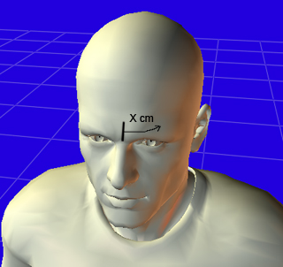
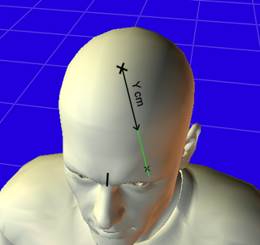
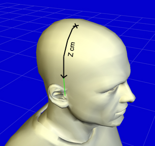
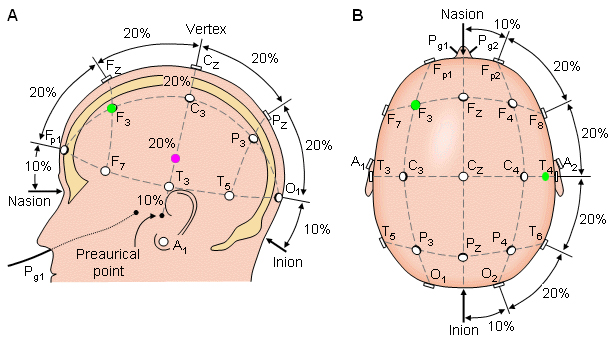

1
X distance from midline

Mark the X cm distance from the midline across the forehead.
TMS Measurement App calculates F3 placement from three head measurements, stores client records locally, and keeps your clinical workflow consistent.
Enter tragus-to-tragus, nasion-to-inion, and head circumference to get X and adjusted Y distances with a clear explanation.
View on GitHubEnter the three head measurements first. Then use the calculated distances to mark the site. The images below show the X, Y, and Z distances as labeled in the Beam F3 guide.

Mark the X cm distance from the midline across the forehead.

Measure the Y cm distance along the midline on the top of the head.

Measure the Z cm distance from the vertex toward the ear.
The app calculates X and Y from your measurements and applies the Beam F3 adjustment. Use the steps below to mark the site.
The EEG reference map helps confirm the F3 region relative to the 10-20 system. Use it alongside the calculated distances for placement.
The app stores every measurement locally, so clinicians can review previous sessions without network access.

Record each TMS session under its measurement: stimulation intensity, pulses, frequency, and more. Every session is saved locally on the device, so you can review a client's full treatment history offline.
Enter the three head measurements in centimeters to calculate the Beam F3 distances used for site marking.
X = 0.1154 × HC, Y = 0.2637 × ((TTT + NI) / 2), Yadj = Y + 0.35 cm.